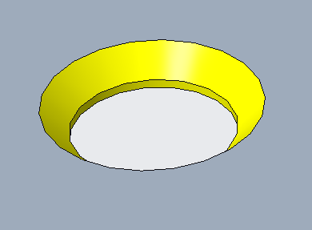

皿穴のエッジと曲げ部との距離を板厚で割った比は、構成可能な指定値以上である必要があります。
部品上の皿穴と曲げ部との距離が最小値を下回る場合、検討対象領域において板材が変形する可能性があり、さらに穴あけ加工が困難になる恐れがあります。
一般的な指針として、皿穴と曲げ部との距離を板厚で割った比は、>= 4.0 とする必要があります。
DFMPro は皿穴と曲げ部との距離を識別し、その距離と板厚の比を算出して、事前に構成された値と照合します。
ユーザーは、デフォルトで構成されている値を編集することができます。
ルール UI では、材料の一覧が Map Material から取得され、ユーザーは材料およびその値を構成することができます。
材料とその値を構成した後、ユーザーは Ctrl+M コマンドを使用して、ルール UI 上で Material Group およびグレードとともに構成済み材料の一覧をフィルタリングして表示できます。同じキー（Ctrl+M）を使用してフィルタをリセットできます。

ここでは、
D = 皿穴と曲げ部との最小距離
t = 板厚
注記:
皿穴が曲げエッジと交差している場合（360 度の穴ラップ角が指定されている場合）、本ルールは距離ゼロとして不合格を表示します。

サポートされている皿穴:
